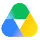

Español · English
MultiDrive
Una sola unidad. Muchas nubes.
MultiDrive agrega varios servicios de almacenamiento en la nube —S3, Backblaze B2, Cloudflare R2, Storj, Nextcloud/WebDAV, Google Drive, OneDrive— en un único volumen con semántica tipo RAID y cifrado de conocimiento cero. El objetivo es que se monte como una unidad más del sistema en Windows y Linux, y ya lo hace. En Android hay aplicación, y el volumen sale dentro de la app de Archivos del teléfono: abajo se explica exactamente qué está probado y qué no.
Si RAID convirtió varios discos poco fiables en un volumen fiable, MultiDrive hace lo mismo con varias cuentas de nube: ningún proveedor tiene tus datos completos, ninguno puede leerlos, y la caída de uno no te deja sin volumen.
Probarla
La aplicación de Android está en pruebas internas de Google Play: no se busca en la tienda, se entra por invitación. Deja tu correo y te añadimos a la lista.
La invitación no es inmediata: la lista se añade a mano.
Cuando llegue, ábrela en el teléfono y acepta desde ahí. Hace falta Android 8 o posterior y
un teléfono arm64, que es lo que llevan todos desde hace años. La interfaz está
en español.
Tu correo se usa sólo para añadirte a esa lista. Se guarda en este mismo servidor, no se le cede a nadie y no se manda ningún boletín. Para salir, escribe a gerencia@jlsoltech.com. Está contado en la política de privacidad.
¿Prefieres compilarla tú? El código está entero en el repositorio, con las instrucciones.
En treinta segundos
No lleva sonido: lo cuenta con texto en pantalla, así que no te pierdes nada viéndolo en silencio y no hacen falta subtítulos. Tampoco se reproduce solo: hasta que le das al play solo viaja la cabecera del fichero, no el vídeo. Y si prefieres leerlo, todo lo de abajo está escrito con más detalle que lo que cabe en medio minuto.
En el móvil
Capturas de verdad, hechas en un teléfono con la versión que hay publicada. Sin maquetar ni retocar: lo que sale ahí es lo que verás.


Con qué funciona
Tus cuentas, las que ya tienes. MultiDrive no aloja nada: habla con ellas directamente y las convierte en un volumen.

Google Driveprobado- Probado de punta a punta contra cuentas reales
- Funciona hoy
- En las próximas versiones
Mezclar tipos es normal y es la gracia: un volumen puede vivir a la vez sobre un Drive, un OneDrive y un cubo S3. Los nombres y los logotipos son marcas de sus dueños y aparecen aquí solo para decir con qué habla MultiDrive; ninguno de ellos lo patrocina ni está asociado con él.
Estado
Funciona y está probado
- Cifrado por trozo. XChaCha20-Poly1305 con clave Argon2id, nombres de fichero incluidos
- Cinco topologías. Reed-Solomon
k+m, espejo, unión, concatenación y lineal, la única que suma capacidades desiguales - Se monta como una unidad. WinFsp en Windows y FUSE en Linux, en lectura y escritura: el Explorador lista carpetas y cualquier programa abre ficheros
- Interfaz de escritorio. Añadir proveedores, crear el volumen, montarlo, revisar su salud, ver cuánto espacio queda en cada cuenta, ampliarlo con una cuenta más y retirarlo
- Se queda en la bandeja del sistema. Cerrar la ventana con la unidad montada la esconde ahí en vez de desmontarla; sin nada montado, cerrar cierra
- Conectar una cuenta de nube es pulsar un botón. Se abre el navegador, entras en tu cuenta y das permiso; tus credenciales no pasan por MultiDrive. A Google se le pide solo acceso a los ficheros que MultiDrive crea, no al resto de tu Drive
- Cambiar de equipo sin volver a enlazar cuenta por cuenta. La configuración se guarda cifrada con tu frase de paso en tus propias nubes, al lado del volumen. En el equipo nuevo basta con enlazar una cuenta: de ahí salen las demás. Sin servidores nuestros por medio
- Rebalanceo. Añadir o retirar proveedores eligiendo qué priorizar, sin dejar de poder leer el volumen mientras tanto. Retirar funciona aunque la cuenta ya no responda
- Ampliar un volumen
linealcuesta lo que aporta la cuenta nueva. Añadir una cuenta de 15 GB a un volumen de 1 TB mueve unos 15 GB, no el terabyte: solo cambia de sitio la fracción que le toca al que llega, y el volumen se sigue leyendo mientras tanto - Escritura diferida con diario. Escribir vuelve enseguida y un hilo de fondo sube; nunca se publica una raíz que apunte a trozos que no están arriba todavía
- Caché en memoria y en disco. La de disco guarda los trozos cifrados y sobrevive al reinicio. Releer 7,6 MiB pasa de 2 718 ms a 23 ms
- Instalador para Windows que trae WinFsp, y servicio: la unidad se conecta desde el Explorador y Windows pide la frase de paso, que no se guarda
- Rescate. Si se pierde el puntero de raíz, el volumen se reconstruye enumerando y descifrando lo que quede en los proveedores
- Google Drive y OneDrive pasan la suite de conformidad contra cuentas reales, y hay un volumen real probado de punta a punta sobre las dos
- Aplicación de Android. El mismo núcleo, compilado para el teléfono. Crea volúmenes y los abre, aparece en la app de Archivos del sistema como un almacenamiento más, trae su propio explorador con buscador y favoritos, lee, escribe, renombra y borra, y recibe ficheros desde la hoja de compartir de cualquier aplicación. Está en pruebas internas de Google Play, probada en tres teléfonos distintos
- El volumen se crea, se amplía y se borra desde el teléfono. Al ampliarlo
dice antes qué se gana, que no siempre es espacio: solo un volumen
linealcrece al añadir una cuenta; en los demás lo que se gana es aguantar una caída más - Dice cuánto queda, con una barra por cuenta. Lo ocupado que enseña es el de la cuenta entera, no solo lo de MultiDrive, y la pantalla lo dice
- Subida automática de carpetas del teléfono. Se eligen las carpetas y el sistema sube lo nuevo en segundo plano, con opción de solo WiFi. Para que un trabajo que arranca solo pueda escribir hay que dejar la frase de paso en el llavero de Android; es opcional, lo dice antes de activarlo, y apagarlo la borra
- Leer sin descargar el fichero entero. En el móvil, abrir un vídeo baja los trozos que el reproductor pide y no el fichero completo. Es lo que separa esto de un descargador
Todavía no
- No hay versión estable. El formato en disco puede cambiar sin aviso. Lo que hay en Google Play son pruebas internas, por invitación: no está en la tienda para cualquiera, y en el escritorio no hay ninguna versión publicada todavía
- Los instaladores de Windows no van firmados. Windows los anuncia como de editor desconocido hasta que haya un certificado. La aplicación de Android sí va firmada: es requisito para subirla a Play
- No hay miniaturas en el móvil. Una carpeta de fotos se ve como una lista de
nombres. Y la aplicación es solo para
arm64, que es lo que llevan los teléfonos desde hace años, pero no todos - No hay índice local. Recorrer el árbol paga una petición por nivel
- Dos máquinas en el mismo fichero, no. Esto decía «un solo escritor» y ya no es verdad: dos equipos que tocan ficheros distintos conviven, porque el que llega segundo vuelve a aplicar su cambio sobre lo que publicó el primero en vez de pisarlo. Lo que sigue sin resolverse es el choque en la misma ruta: ahí se rechaza y se dice cuál es, en vez de elegir un ganador en silencio y perder el trabajo de alguien
Medido, no prometido
El proyecto se apoya en medidas contra cuentas reales, no en estimaciones. Y también en lo que no se reprodujo al repetirlas:
| En Google Drive, preguntar por un objeto que no existe cuesta 2,6 veces una operación normal | Es su peor caso, y es justo lo que hace revisar un volumen. Por eso la revisión enumera en vez de preguntar, y pasa de semanas a minutos |
| Enumerar cuesta una petición por directorio, no una en total | Drive y OneDrive son jerárquicos. El reparto de los trozos en carpetas tiene un precio que hay que medir antes de fijarlo |
| Ninguna proporción entre las dos nubes ha sobrevivido a tres tandas de medidas | Una salió 4,7×, 1,6× y 2,5×; otra cambió de sentido. Se miden proporciones dentro de un proveedor, que sí se repiten, y se desconfía de las que comparan dos |
La prueba que importa, hecha contra cuentas reales: un volumen
rs(2,1) repartido entre Google Drive, OneDrive y un disco local. Se sube un
fichero, se destruye un proveedor entero, el fichero se sigue leyendo byte
a byte idéntico, y rebuild regenera los fragmentos que faltaban en 34 segundos.
Con una salvedad honesta: fue 1 MB, no 10 GB.
Qué resuelve
| Tengo cuentas sueltas en varios sitios | Un solo volumen sobre todas, cifrado y con RAID |
| Si el proveedor me suspende la cuenta, lo pierdo todo | Paridad k de n: sobrevive a la pérdida de m proveedores |
| El proveedor puede leer mis archivos | Cifrado en cliente, nombres incluidos |
| Vendor lock-in | Añade o retira proveedores y el volumen se rebalancea |
Sobre el espacio, elige la topología sabiendo esto. Las que
reparten cada trozo entre todos —espejo, paridad, unión— están limitadas por el proveedor
con menos sitio: los fragmentos son iguales, así que cuando el más pequeño se llena no cabe
nada más aunque a los otros les sobre. Con 15 GB, 5 GB y 1 TB salen 5 GB en
espejo y 15 GB en unión. Solo lineal suma:
pone cada trozo entero en un proveedor, elegido en proporción a lo que cada uno aporta, y
con esos mismos números da 1,02 TB. A cambio no añade ni una caída de
margen, igual que unión.
Cómo funciona
Trozos inmutables
Cada archivo se corta en trozos de 16 MiB, direccionados por su hash BLAKE3. Copy-on-write: nada se sobrescribe jamás.
Erasure coding
Reed-Solomon k+m. Con rs(4,2) sobre 6 proveedores sobrevives a 2 caídas con 1,5× de sobrecoste.
Cifrado en cliente
XChaCha20-Poly1305 por trozo, clave derivada con Argon2id. El proveedor ve blobs opacos.
Montaje nativo
WinFsp en Windows, FUSE en Linux. En lectura y escritura, con caché y subida en segundo plano.
Y en el móvil
En Android no hay montaje: un DocumentsProvider hace que el volumen salga en la app de Archivos, con su propio explorador al lado.
Topologías
modo fórmula sobrevive a sobrecoste
concat 1 de 1 nada 1,0×
union:n n de n nada 1,0×
lineal:n 1 de 1, donde le toque nada 1,0×
espejo:n 1 de n n−1 caídas n×
rs(k,m) k de k+m m caídas (k+m)/k ×lineal es la única que suma capacidades
desiguales: pone cada trozo entero en un proveedor, elegido en proporción a lo que
aporta. Las demás cortan cada trozo en partes iguales, así que manda el más pequeño.
Leer cuesta una petición en vez de n, y añadir un proveedor mueve solo la fracción
que le toca en vez del volumen entero. No añade ni una caída de margen.
Qué NO es
- No es un sistema de respaldo. Para eso están restic, kopia o borg.
- No es un disco de sistema ni un volumen para bases de datos. La escritura aleatoria de 4 KB sobre Internet no tiene arreglo físico. Es para medios, archivo y datos tibios.
- No es magia contra los Términos de Servicio. Las nubes de consumo desaconsejan este patrón de uso; los proveedores de primera clase son los compatibles con S3 y los autoalojados.
- No es software terminado. No hay versión estable —lo que hay en Play son pruebas internas—, el formato en disco puede cambiar sin aviso, y no debes confiarle todavía el único ejemplar de nada.
¿Te gusta el proyecto? Apóyame a seguir creando
MultiDrive es software libre bajo AGPL-3.0: no hay versión de pago, ni funciones guardadas detrás de una suscripción, ni anuncios. Si te resulta útil y quieres que siga creciendo, puedes echar una mano.
Se abre en Ko-fi, que es quien gestiona el pago. Las formas y los importes los verás allí.

LuisMora78.Apoyar es del todo opcional y no desbloquea nada: lo que hay, lo hay para todo el mundo igual. Lo que sí hace es pagar el servidor y dar tiempo para seguir.